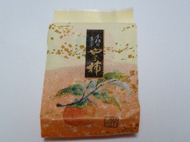
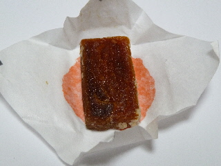
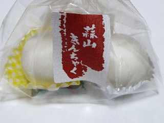
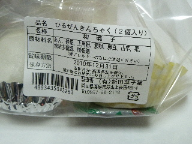
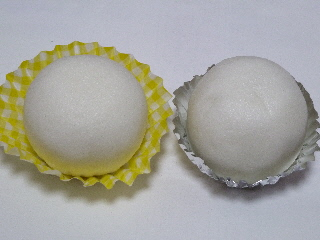
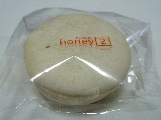

蒜山SAで売ってた柿のお菓子
2010/12/19
ここも柿の産地なんですね。（たぶん）

普段は食べないですが、こうやって綺麗に包装してあると美味しそうに見えちゃって買っちゃいました。

ちょっと軽い感じの干柿かなと思いました。小さくて柔らかかったです。
岡山県真庭市蒜山西茅部
2010/12/19
ここも柿の産地なんですね。（たぶん）

普段は食べないですが、こうやって綺麗に包装してあると美味しそうに見えちゃって買っちゃいました。

ちょっと軽い感じの干柿かなと思いました。小さくて柔らかかったです。
2010/12/19
新名物って書いて販売されていました。栗饅頭ですね。

賞味期限が10日以上あって、すぐ食べなくていいので、気楽に変えました。お土産にもいいですね。

白あんの栗饅頭と、黒あんの栗饅頭が入っていました。

蒜山きんちゃくって名前はどうしてついたんでしょうね？地元の材料を使っているんでしょうか？
2010/12/19
蒜山サービスエリアの下りで味噌マカロンを見つけました。見た目、味噌な感じはしないですね。

食べてみた感想ですが、味噌味はよくわかりませんでした。砂糖とクリーム味はよくわかりました。